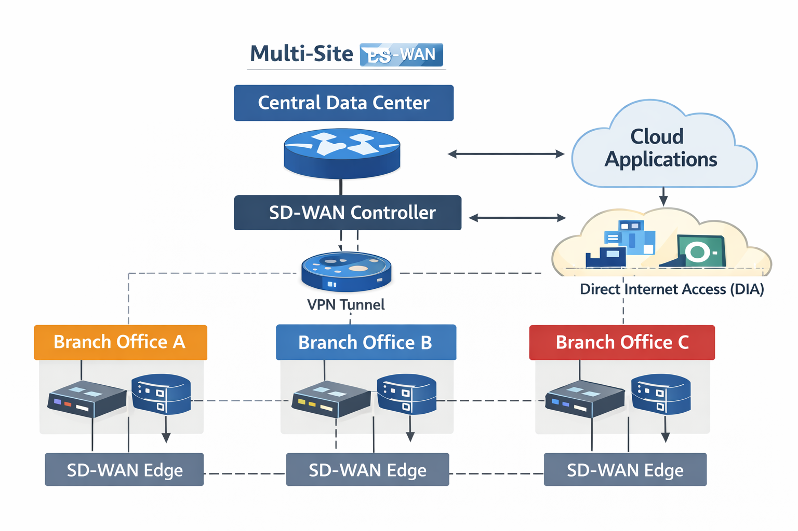

Operational Impact
- Reduced single-point-of-failure risk by proposing dual-hub SD-WAN paths and stronger failover planning across sites
- Improved troubleshooting by centralizing visibility, policy enforcement, and monitoring across branch locations
- Supported more reliable user experience for voice, video, payroll, billing, and cloud-connected applications through better resilience and traffic handling
This project evaluates the existing network infrastructure of a growing multi-site company, identifies security and performance weaknesses, and proposes a dual-hub SD-WAN architecture to support additional offices, better resilience, and more consistent policy enforcement.
My role
Assessed current-state architecture, documented operational pain points, proposed the future-state SD-WAN design, and tied network choices to supportability and continuity.
IT support relevance
Shows how I think about user experience, latency, visibility, failover, and how poor design choices create recurring support problems.
Current-state issues
| Finding | User or support impact | Risk level |
|---|---|---|
| Memphis lacked a local firewall | Created a security and availability dependency on Dallas, increasing outage and troubleshooting complexity | High |
| Sites relied on a single WAN connection | Provider outages could interrupt communications and line-of-business applications | High |
| No QoS implementation | VoIP and video traffic competed with bulk data, degrading user-facing services | Medium |
| Limited capacity planning | Bandwidth bottlenecks increased delay for payroll, billing, and database traffic | Medium |
Before vs. after
| Before | After |
|---|---|
| Single-path WAN dependencies | Dual-hub SD-WAN with failover-ready paths |
| Limited monitoring visibility | Centralized monitoring and log correlation |
| Inconsistent policy enforcement | More consistent security policy across locations |
| Harder to isolate site-specific issues | Better path control and simpler fault isolation |
Key design decisions
- Dallas and Houston operate as redundant SD-WAN hub sites, with Memphis and Kansas City as spokes.
- Each site uses dual WAN links, with SD-WAN steering traffic across primary and backup paths.
- End-to-end IPsec VPN tunnels protect intersite traffic, while SSL VPN supports secure remote access.
- SolarWinds and Splunk add centralized visibility for faster issue detection and escalation.
Key design decision
SD-WAN was selected because it centralizes policy enforcement and monitoring while improving resilience and reducing the number of location-specific mystery problems that support teams have to chase manually.
What this proves
I believe this project shows that I can connect architecture choices to uptime, troubleshooting workload, user experience, and business continuity instead of treating network design like an isolated diagram exercise.